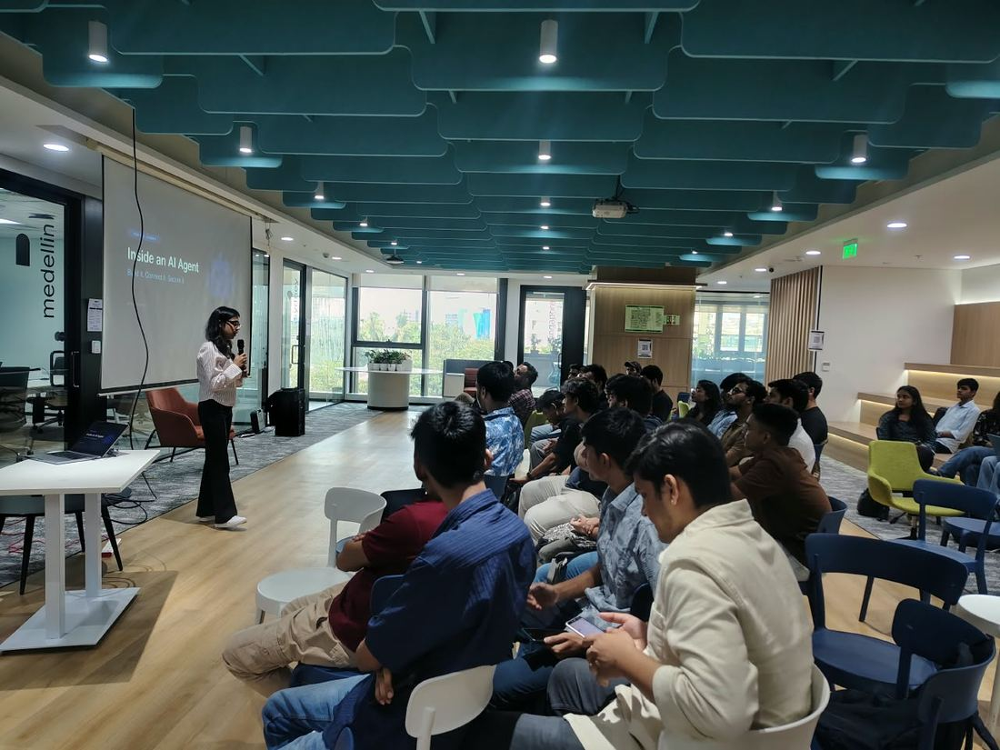
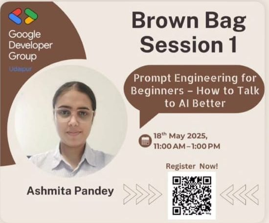
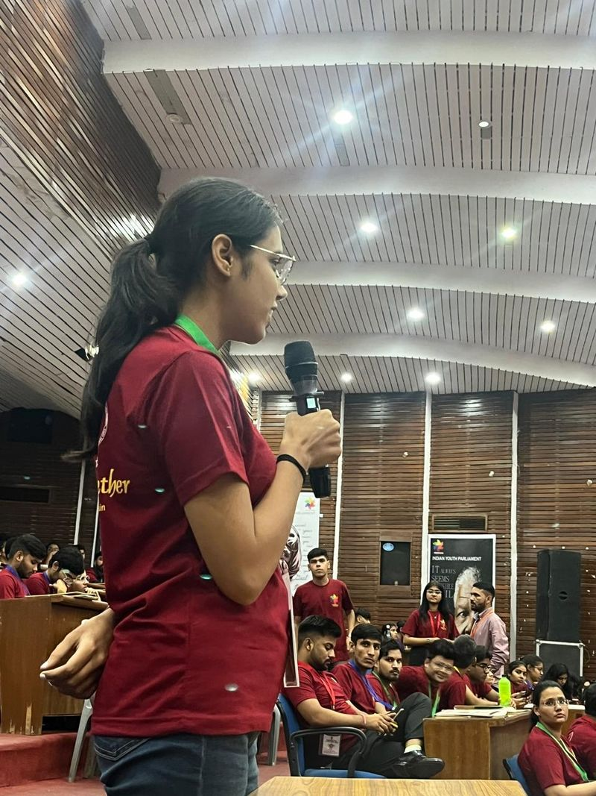
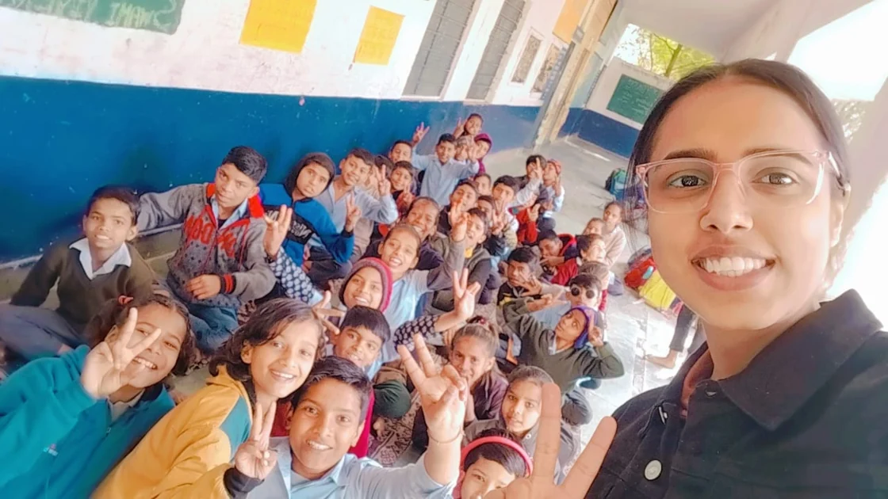

Featured talk
Inside an AI Agent: Build it. Connect it. Secure it.
A practical introduction to building an AI agent, connecting tools, and setting limits on what it can do.
Read the meetup recapBackend & AI Engineer · Tech Speaker
I build backend and AI systems. I write and teach about how they work.
Hey, I’m Ashmita.
I’m a software engineer at Fynd, where I build backend and AI systems for Granary, Reliance Retail’s grocery planning platform. It helps teams manage inventory and decide what to stock, where to stock it, and when to introduce or phase out products. Granary supports JioMart’s online business and Reliance Retail’s offline store network, across formats such as Smart Bazaar, Smart Point, Freshpik, and Signature.
I still remember watching a YouTube video play without buffering when we first got mobile internet at home. I wanted to know how a video uploaded miles away could reach my screen that fast. That question got me into tech, and I still like figuring out how things work.
Outside work, I enjoy teaching and mentoring, and I share what I learn through technical blogs, talks, and workshops. My other interests include reading, writing short stories, a bit of amateur photography, and many more.
Tools and techniques I use to build backend and AI systems.
Fynd · Feb 2026–Present
I work on Granary, Reliance Retail’s grocery planning platform for physical stores and JioMart.
PepSales AI · Jan 2025–Jan 2026
I built backend systems for AI-powered sales workflows.
Before that
I taught students and helped an early-stage startup grow from its first steps to appearing on Shark Tank, before coming back to engineering.

Featured talk
A practical introduction to building an AI agent, connecting tools, and setting limits on what it can do.
Read the meetup recap
GDG Udaipur · May 2025
Brown Bag Session 1
Watch on YouTube
Jaipur · September 2024
Articles on system design, distributed systems, and AI.
Databases
How bloom filters help a database avoid checking data that is definitely not there.
AI
Why a clear specification matters when you write code with AI.
Redis
A closer look at how Redis handles work at scale.
I joined as a developer in my first semester, then led the growth team and helped get the startup off the ground. We went on to appear on Shark Tank.
I led technical work in student clubs and taught students. Teaching is still part of how I share what I learn.


07 / Contact
For speaking, engineering roles, or collaborations, send me a note.